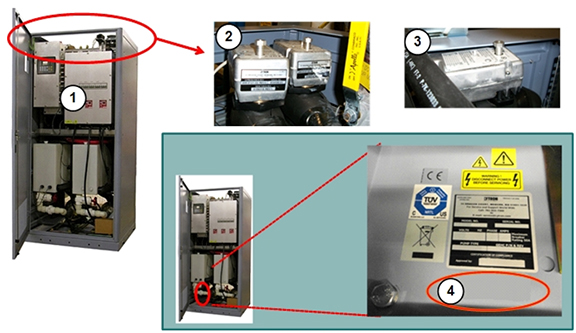
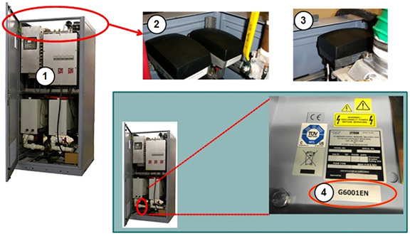

- 00000018WIA30A1AE20GYZ
- id_131065012.5
- May 2, 2023 8:46:03 AM
HEC Troubleshooting
This document describes the various problems and conditions for the heat exchanger cabinet (HEC) and the possible solutions for those problems and conditions.
(For HEC G6000EN) For internal wiring and plumbing schematics, see GE HealthCare DVMR HEC Heat Exchanger Cabinet Liquid Cooling System Manual, DOC1806874, available from the online documentation library. The G6000EN HEC can be identified by the features shown in Figure 1.
(For HEC G6001EN) For internal wiring and plumbing schematics, see GE HealthCare DVMR HEC Heat Exchanger Cabinet Liquid Cooling System Manual, DOC1816671, available from the online documentation library. The G6001EN HEC can be identified by the features shown in Figure 2.

| 1 | HEC catalog number G6000EN | 3 | Chilled air mixing valve |
| 2 | GC/PE mixing valve | 4 | No G-catalog label |

| 1 | HEC catalog number G6001EN | 3 | Chilled air mixing valve |
| 2 | GC/PE mixing valve | 4 | Catalog label G6001EN |
| Notice | |
|---|---|
| For this condition: | Follow these steps: | ||||||||||||||||
|---|---|---|---|---|---|---|---|---|---|---|---|---|---|---|---|---|---|
| Difficulty navigating or interpreting HEC screens. | Section 5.3 of Heat Exchanger Theory describes how to navigate the screens. Procedures for setting parameters for the HEC are described in subsequent sections of that document. | ||||||||||||||||
| The HEC display shows zero cryogen compressor coolant flow, despite customer coolant flowing through the HEC and the cryocompressor receiving adequate flow. | Perform a TPS reset. If the cryogen compressor flow continues to show zero, the flowmeter in the HEC may be clogged or defective. It can be visually inspected by swinging the power box out of the way (see applicable steps in Power Box replacement procedure). | ||||||||||||||||
| The HEC display shows dashes instead of values for gradient or power electronics coolant flow. | Check the red VFD display
of the pump on the circuit in question. Make sure the display is not
dark and that the circuit breaker it is not turned off. If the VFD display is turned on, the issue is probably with the PE or GC pressure sensors.
| ||||||||||||||||
| The system displays messages saying that the HEC coolant reservoir is low. The HEC display appears to confirm this. | There are upper and lower
pressure-sensitive level sensors mounted on the right side of each
reservoir tank. These sensors close (turn on) when the coolant level
is high (usually three inches above the sensor, but sometimes the
height must be as high as five inches above the sensor). You can measure the switch continuity with a digital multi-meter (switch closed, low resistance/switch open, very high resistance). Add coolant to the reservoir until the coolant level is six to seven inches above the sensors. See HEC Coolant Fill and Coolant Leak Check. PE or GC should stop reporting the warning when the increase in coolant pressure causes the switches to engage. Rarely, the pressure sensors become stuck. Stuck sensors can be freed by tapping them with a finger. Do not use anything other than your finger to tap the sensors. | ||||||||||||||||
| The system displays messages saying coolant resistivity is too low. | The system reports a warning
when resistivity falls below 3.5 kOhm-cm and inhibits scanning if
below 2.5 kOhm-cm. Deionize the coolant to restore the proper resistivity. See Heat Exchange Cabinet Coolant Deionization. Note: Generally, new systems will register around 5-15 kOhm-cm. However, it is possible for a system to have and display a coolant resistivity between 0.01 kOhm-cm and 1000 kOhm-cm, so it is possible that a new system will have a resistivity lower than 2.5 kOhm-cm and will not be able to scan. The solution is to deionize the coolant. | ||||||||||||||||
| Performing deionization process, but resistivity value reported from HEC LCD is slowly going down or not changing. |
There are two possibilities:
| ||||||||||||||||
| The system displays pressure or RF air temperature warning errors. | Any deviations from specifications for pressure or cooling are stored in the system error log. If the system returns error 2268904 or 2268905:
Refer to the Lytron vendor manual (GE PN 5161931) for vendor specifications. | ||||||||||||||||
| Suspected bad pressure sensor. | It is important to determine whether the sensor or the signal box (PLC) is actually faulty. | ||||||||||||||||
If you are testing an HEC
facility coolant inlet or outlet sensor:
| |||||||||||||||||
If you are testing a GC pressure
sensor:
| |||||||||||||||||
If you are testing a PE pressure
sensor:
| |||||||||||||||||
| One or both of these errors appear repeatedly
in the error log, but scanning is not inhibited: Heat Exchanger Cabinet (HEC) detected the gradient coil coolant flow is too low. Verify that the pump is turned on, and all inline valves are open. Heat Exchanger Cabinet (HEC) detected the power electronics coolant flow is too low. Verify that the power electronics pump is turned on, and all inline valves are open. |
Note:
A jumper wire is not used with the Price pump. Note:
These speeds must be verified with the HEC in full-power mode (scan-ready). If you are unsure if the HEC is in full-power mode, prescribe an exam on the MR system to ensure the pumps are ramped to full speed. | ||||||||||||||||
|
Pump type (identify as described above) |
Ebara |
Price | |||||||||||||||
|
RF amplifier type in PGR cabinet. Identify by presence of red and blue cooling hoses hooked to front of RF amplifier. Hoses are not present on air cooled RF amplifiers. |
Liquid |
Air |
Liquid |
Air | |||||||||||||
|
Displayed value on middle VFD (VFD PPMP) |
50 ±1 |
43 ±1 |
61 ±1 |
53 ±1 | |||||||||||||
|
Displayed value on left VFD (VFD GPMP) |
50 ±1 |
50 ±1 |
61 ±1 |
61 ±1 | |||||||||||||
|
If the pressure is outside the stated limits, replace the pressure sensor. Do not change any adjustable valve positions for less than maximum flow. | |||||||||||||||||
| One or both of these errors appear repeatedly
in the error log, but scanning is not inhibited. Heat Exchanger Cabinet (HEC) detected the gradient coil coolant flow is too high. Heat Exchanger Cabinet (HEC) detected the power electronics coolant flow is too high. Verify that the power electronics pump is turned on, and all inline valves are open. |
Note:
A jumper wire is not used with the Price pump. Note:
These speeds must be verified with the HEC in full-power mode (scan-ready). If you are unsure if the HEC is in full-power mode, prescribe an exam on the MR system to ensure the pumps are ramped to full speed. | ||||||||||||||||
|
Pump type (identify as described above) |
Ebara |
Price | |||||||||||||||
|
RF amplifier type in PGR cabinet. Identify by presence of red and blue cooling hoses hooked to front of RF amplifier. Hoses are not present on air cooled RF amplifiers. |
Liquid |
Air |
Liquid |
Air | |||||||||||||
|
Displayed value on middle VFD (VFD PPMP) |
50 ±1 |
43 ±1 |
61 ±1 |
53 ±1 | |||||||||||||
|
Displayed value on left VFD (VFD GPMP) |
50 ±1 |
50 ±1 |
61 ±1 |
61 ±1 | |||||||||||||
|
If the pressure is outside the stated limits, replace the pressure sensor. Do not change any adjustable valve positions for less than maximum flow. | |||||||||||||||||
| Suspected bad temperature sensor. | It is important to determine whether the sensor or the signal box (PLC) is actually faulty. | ||||||||||||||||
If you are testing the HEC
facility coolant inlet sensor:
| |||||||||||||||||
If you are testing the GC
temperature sensor:
| |||||||||||||||||
|
If you are testing the PE temperature sensor:
| |||||||||||||||||
If you are testing the Blower
temperature sensor:
| |||||||||||||||||
| Circuit breaker trips when power is applied to the HEC. Circuit breaker or fuses in MDP may trip at same time. | Examine the HEC for short
circuits:
If there are no short circuits observed, order and replace the HEC power box. | ||||||||||||||||
| There is insufficient water flow to or from components in the PGR cabinet. |
| ||||||||||||||||
| HEC pumps are constantly cycling on and off. | The HEC stops pump operation if GC or PE coolant temperature sensors report measurements that are over the limits. This can be due to the heating of the pipe while the pump is dry or the flow of coolant is stalled. Check for any obstructions (kinks, twists, etc.) in the coolant line or improper installations (backwards check valve) or closed ball valves (tank valve, external valves, etc.). | ||||||||||||||||
| Need to view HEC parameters in real-time. | The system uses event-based polling to monitor the HEC, storing the data it receives to the cooling.xml log file. Open a C-shell and type: more /usr/g/service/log/paramdata/cooling.xml Each output describes units in which the value is expressed. You must pay attention to the units and scaling. | ||||||||||||||||
| At power up, the GC/PE coolant pump or blower is not operating. The Lenze AC Tech VFD for the component displays UF. |
| ||||||||||||||||
| After initial power up, the system reports the GC coolant resistivity is out of range (too low or too high). | If the GC resistivity value
is less than 2.5 kOhm-cm and greater than 1 kOhm-cm, deionize the
coolant. See Heat Exchange Cabinet Coolant Deionization. A GC resistivity value greater than 20.0 kOhm-cm may mean that an FE forgot to add rust inhibitor and biocide chemicals after performing the last deionization procedure. Perform deionization again and ensure these are added according to the procedure. If values are unchanged after adding additives, then proceed to “If the fuse is OK” section below. A GC resistivity value less than 1 kOhm-cm may indicate faulty hardware.
| ||||||||||||||||
| The cable dressing for the HEC signal box appears different. | There are two versions of
the cable dressing for the HEC signal box. The newer version is used
in HEC version 11 and higher and signal box version 2 and higher. To determine the version of the HEC, locate the rating label for the HEC behind the left front door on the floor of the cabinet. To determine the version of the signal box, locate the label on the side of the signal box. If there is no label, the signal box is an early model. | ||||||||||||||||
| The mixing valve reading on the signal box LCD screen is at 100% or 0%. | A reading of 100% means:
A reading of 0% means:
Mixing valve positions (0% to 100%) does not have any significant effect on total facility coolant flow through HEC, because these are three-way valves so the same amount of coolant passes through the cabinet regardless of valve position. | ||||||||||||||||
| HEC blower circuit breaker trips and needs to be manually reset. | The blower may be drawing
excess current because of a blockage.
Additionally, there are hoses internal to the HEC that connect to the blower. It may be necessary to remove the suction hose (the one not connected to the liquid-to-air heat exchanger) and check if the internal wall of the hose is still intact and not delaminated or clogging airflow. | ||||||||||||||||
| Coolant to PE or GC components is too cold or warm (HEC does not appear to be regulating temperature of coolant). |
| ||||||||||||||||
| On power up, Lenze AC Tech VFD displays two-letter code such as UF. |
| ||||||||||||||||
| Eaton VFD displays power fault two-letter code F1 09 – Reset/clear power fault |
DETAILS: After mains power interruption, the VFD will lock out in an error condition, displaying F1 09. The reset/clear power feature allows the VFD to ramp to a safe powered down condition to protect the load device (motor). A TPS Reset will not recover the VFD from this condition. Follow this process to manually clear the error message and reset the pump or blower.
Note:
To avoid future power faults, make sure to perform the following steps for “Restart Programming” as well. | ||||||||||||||||
| Eaton VFD displays power fault two-letter code F1 09 – Restart Programming for the HEC Power Box |
DETAILS: After mains power interruption, the VFD will lock out in an error condition, displaying F1 09. The restart programming feature allows the VFD to ramp to a safe powered down condition to protect the load device (motor). A TPS Reset will not recover the VFD from this condition. Follow this process to change the Auto-Restart setting, parameter P6.13, allowing TPS reset to start the pump and blower.
| ||||||||||||||||
| Fault | Description | Possible Cause |
| AF | High Temperature | Ambient temperature is too high; the cooling fan has failed (if equipped). |
| CF | Control Fault | A blank EPM or an EPM with corrupted data has been installed. |
| cF | Incompatibility Fault | An EPM with an incompatible parameter version has been installed. |
| dF | Dynamic Braking Fault | The drive has sensed that the dynamic braking resistors are overheating and has shut down to protect the resistors. |
| EF | External Fault | One of the TB-13 terminals is set as an external fault input and that terminal is open with respect to TB-11. |
| GF | Data Fault | User data and OEM defaults in the EPM are corrupted. |
| HF | High DC Bus Voltage Fault | Line voltage is too high; deceleration rate is too fast (overhauling load). For fast deceleration or overhauling loads, dynamic braking may be required. |
| JF | Remote Keypad Fault | The communication link between the drive and the optional remote keypad has been lost. Check for proper wiring and/or noise. |
| LF | Low DC Bus Voltage Fault | Line voltage is too low. |
| OF | Output Transistor Fault | Phase to phase or phase to ground short circuit on the output. Boost settings are too high. Acceleration rate is too fast. Failed output transistor. |
| PF | Current Overload Fault | VFD is undersized for the application. Mechanical problem with the driven equipment. |
| UF | Start Fault | Start command was present when the drive was powered up. Must wait 2 seconds after powered up to apply start command if start method is set to normal. |
| F1 | EPM Fault | The EPM is missing or damaged. |
| FC | Internal Fault | The control board has sensed a problem. Replace VFD. |
| F2–F9 | Internal Fault | The control board has sensed a problem. Replace VFD. |
| Fo | Internal Fault | The control board has sensed a problem. Replace VFD. |
| Fault | Description | Possible Cause |
| 01 | Over Current | The frequency inverter has detected an excessive current in the motor cable, or there was a sudden load increase, or there was a short circuit in the motor cable, or the motor is Inadequate. |
| 02 | Over Voltage | The DC intermediate circuit voltage has exceeded the internal safety limit, or the delay time is too short, or the high over voltage peaks in line power. |
| 03 | Ground Fault | An additional leakage current was detected when starting by means of a current measurement, or there is a fault with the cable insulation or motor insulation. |
| 08 | System Fault | CPU error message or internal communication fault. |
| 09 | Under Voltage | The DC intermediate circuit voltage has exceeded the internal safety limit. Probable cause: The supply voltage is too low, or internal device fault, or site power failure. |
| 13 | Under Temperature | The IGBT switch temperature is below 14°F (-10°C) |
| 14 | Over Temperature | The IGBT switch temperature is above 248°F (120°C). An excessive temperature warning is issued if the IGBT switch temperature goes above 230°F (110°C). |
| 15 | Motor Stalled | The motor blocking protection mechanism has been triggered. |
| 16 | Motor Over Temperature | The frequency inverter’s motor temperature model has detected motor over heating. The motor is overloaded. |
| 17 | Motor Under Load | Motor idle, connection to load machine interrupted (Example: torn drive belt). |
| 22 | EEPROM Checksum Error | Error when storing parameters, or malfunction, or component fault, or error in micro-processing monitoring. |
| 25 | Watchdog (API) | Error in micro-processor monitoring, or malfunction, or component fault. |
| 27 | Back EMF | Electromotive force. The voltage induced in the motor with the rotation is greater than the output voltage of the frequency inverter. |
| 35 | Application Error | The application is not working. |
| 41 | IGBT Over Temperature | The IGBT switch temperature is above 248°F (120°C). An excessive temperature warning is issued if the IGBT switch temperature goes above 230°F (110°C). |
| 50 | Live Zero Error | Current less than 4 mA, or the voltage is less than 2V, or the signal cable was interrupted. The signal source is faulty. |
| 51 | External Fault | Error message at a digital input (DI1–DI6). |
| 53 | Fieldbus Error | The communication link between the master device and the drive's fieldbus has been interrupted. |
| 54 | Fieldbus interface error | MMX-NET-XA mounting frame for fieldbus interface cards is not connected to the frequency inverter, or the optional fieldbus interface is not fitted. |